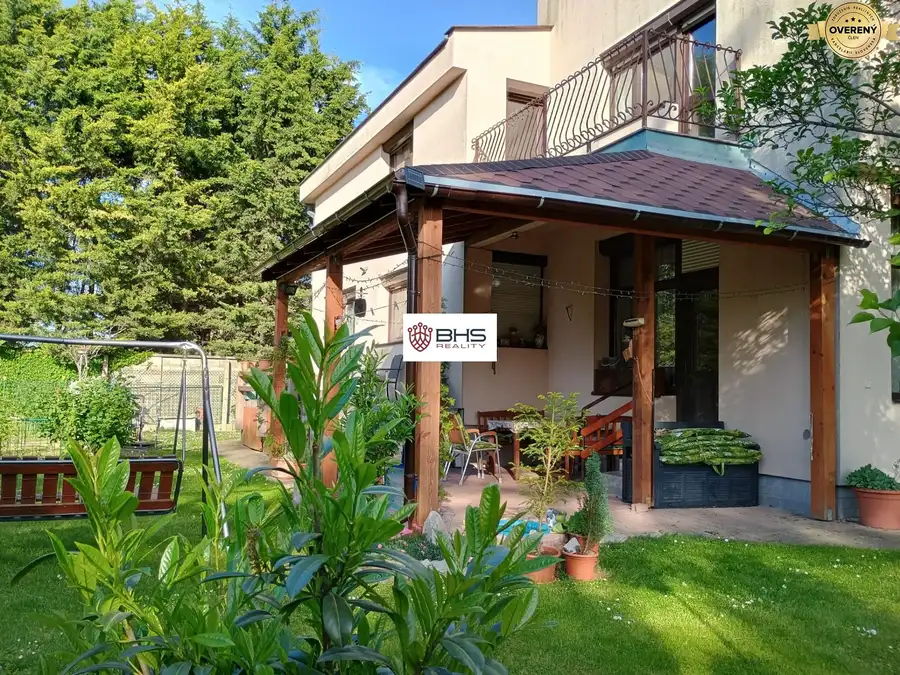
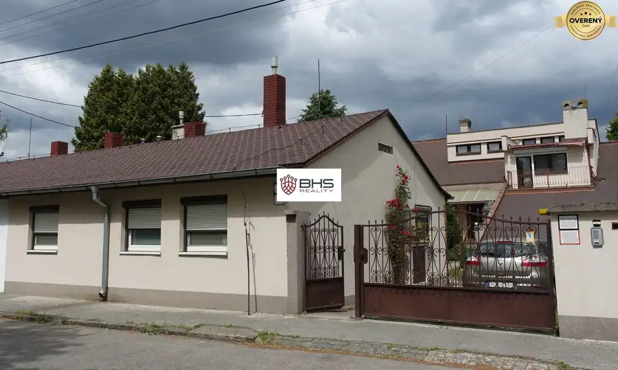
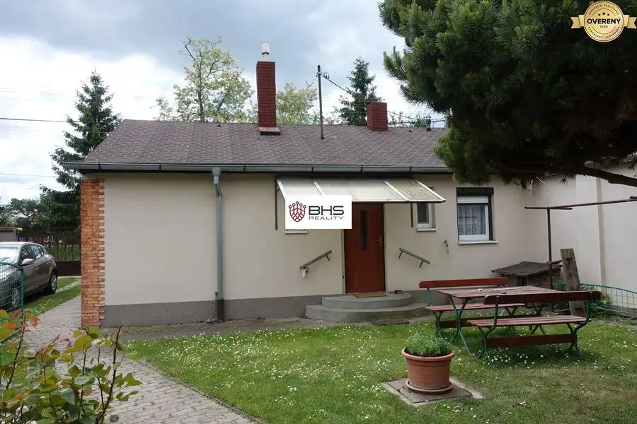
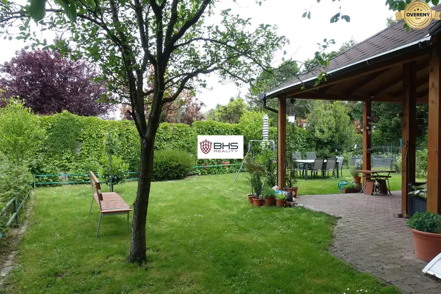
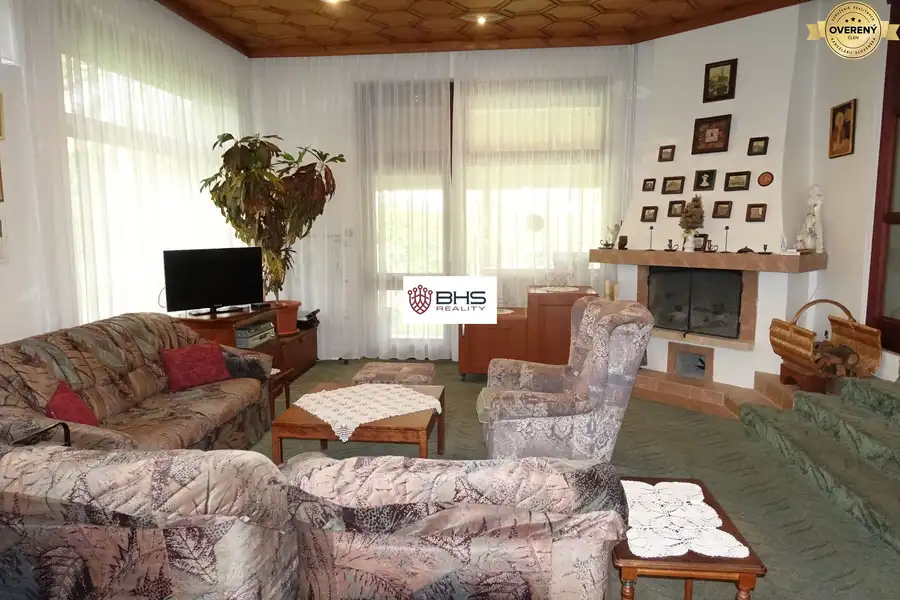

PREDAJ – dva RD, 7-izb. a 2-izb., Dunajská Lužná, pozemok 966 m2
Dunajská Lužná






- Dispozícia7-izbový
- Plocha537 m²
- Stavčiastočne prerobený
- Vlastníctvoosobné
- Energetická triedaB
O nehnuteľnosti
Hľadáte dva rodinné domy „na jednej adrese“? Ponúkame vám na predaj, v exkluzívnom zastúpení, dve nehnuteľnosti v Dunajskej Lužnej, na ulici Pri jame. Obidva rodinné domy sú postavené na jednej parcele, menší 2-izbový dom sa nachádza priamo pri chodníku ulice na uličnej čiare, druhý rodinný dom - 7-izbový je odsadený od ulice vo vzdialenosti asi 20 metrov. Na pozemku je možné parkovanie dvoch automobilov plus pre ďalšie dve osobné autá je k dispozícii dvoj-garáž.
VEĽKÝ DOM :
Veľkorysý a atypický 7-izbový rodinný dom je samostatne stojaci, trojpodlažný, so šikmými strešnými plochami s celkovou úžitkovou plochou (ÚP) 537 m2. Bol postavený v roku 1994. Dom je vybudovaný z klasických materiálov (tehla) a je zateplený. Je napojený na všetky IS - na elektrinu, vodovod, kanalizáciu a plyn plus má vlastnú studňu.
Dispozične je dom riešený v dvoch nadzemných a jednom podzemnom podlaží.
Vstupné podlažie (ÚP 206 m2) - je riešené ako spoločenské s hospodárskym zázemím (obývacia izba s kozubom a výstupom na záhradu, kuchyňa s výstupom na terasu, samostatné WC, šatník, práčovňa).
Na hornom podlaží (ÚP 167 m2) sú situované priestory súkromného charakteru (spálňa, izby, veľká kúpeľňa, relaxačná a hosťovská miestnosť, spoločný obývací priestor) - stojí za to spomenúť 4 balkóny, z ktorých každý je situovaný na jednu svetovú stranu.
Podzemné podlažie (ÚP 162 m2) – suterén pozostáva z dvoj-garáže, kotolne, technickej miestnosti pre centrálny vysávač, niekoľkých menších skladov, sauny, WC, sprchového kúta, miestnosti pre telocvičňu, z vínnej pivnice s krbom.
Dom je vybavený vonkajšími žalúziami, disponuje zabudovaným centrálnym vysávačom, vo vstupnej hale, centrálnej hale a v kuchyni je položená talianska dlažba. Dvere v hale, kuchyni a obývačke sú posuvné. Všetky okná a dvere sú vyrobené z masívu – z červeného smreka.
Rodinný dom je spoločenskou časťou prepojený na priľahlú záhradu s okrasnou aj úžitkovou zeleňou, pergolovou úpravou a posedením. Zastavaná plocha domu je 287 m2. Celková výmera rovinatého pozemku je 966 m2, po odpočítaní zastavaných plôch obidvoch rodinných domov je využiteľná plocha pozemku 597 m2.
Pôdorysy jednotlivých podlaží je možné na požiadanie poslať.
MALÝ DOM umiestnený na uličnej čiare:
Súčasťou predaja je aj starší, udržiavaný, čiastočne prerobený 2-izbový rodinný dom s príslušenstvom: kuchyňa, chodba, kúpeľňa, toaleta a špajza. Dom je nepodpivničený, s jedným nadzemným podlažím, so sedlovou strechou. Na dome bola realizovaná obnova fasády, rekonštrukcia strechy, výmena okien za plastové s vonkajšími žalúziami, bola rekonštruovaná kuchyňa a kúpeľňa. Celková úžitková plocha domu je 67 m2. Dom sa dá využiť buď na bývanie pre mladú rodinu alebo pre starších ľudí alebo svojím umiestnením ponúka skvelú možnosť aj na podnikanie. Zastavaná plocha domu je 82 m2.
Záhrada :
Je starostlivo udržiavaná, okrasná, s oddelenou úžitkovou časťou na pestovanie zeleniny. Umiestnenie hlavnej časti záhrady zabezpečuje súkromie a oddelenosť od okolia.
Kúpou týchto nehnuteľností sa Vám ponúka kvalitné a ideálne (viacgeneračné) rodinné bývanie, môže byť spojené aj s podnikaním, v tichom prostredí Dunajskej Lužnej, kde nájdete oddych, ticho, relax a súkromie, vďaka absencii akejkoľvek zástavby na druhej strane cesty. Obec Dunajská Lužná leží v okrese Senec je vzdialená od Bratislavy približne 15 km. Vybudovaním cestných obchvatov R7 a D4 sa výrazne zrýchlilo a skvalitnilo cestovanie najmä do Bratislavy.
Cena zahŕňa predaj obidvoch rodinných domov, je vrátane sprostredkovateľskej provízie, kompletného právneho a realitného servisu a hypotekárnych služieb.
Viacej informácií : tel. č.: , Iva Bedejová,
Patríme (BHS Reality) k členom Realitnej únie SR a ZRKS s garanciou profesionálnych právnych služieb, komplexného poradenstva a bezproblémového priebehu realizovanej kúpy/predaja.
Všetky technické údaje podliehajú zmenám a sú založené na informáciách poskytnutých majiteľom.
©Text a fotografie sú autorským dielom a majetkom realitnej kancelárie BHS Reality, s.r.o..
Parametre
- Rozloha pozemku
- 966 m²
- Zastavaná plocha
- 287 m²
- Úžitková plocha
- 537 m²
- Počet poschodí
- 2
- Počet izieb
- 7
- Vlastníctvo
- osobné
- Stav
- čiastočne prerobený
- Status
- aktívne
- Odvoz odpadu
- áno
- Voda
- studňa a vodovod
- El. napätie
- 230/400V
- Plyn
- áno
- Kanalizácia
- áno
- Internet
- optika
- Kúpeľňa
- vaňa a sprchovací kút
- Vykurovanie
- vlastné - plyn
- Balkón
- áno - 4
- Terasa
- áno - 2
- Pivnica
- áno
- Garáž
- áno - 2 autá
- Parkovanie
- vnútorné
- Inžinierske siete
- áno
- Postavené z
- tehla
- Zariadenie
- čiastočne
- Zateplený objekt
- áno
- Strecha
- po rekonštrukcii
- Krb
- áno
- Káblová televízia
- áno
- Energetický certifikát
- B
- Bezbariérový prístup
- nie
- Okná
- drevené
- Terén
- rovina
- Prístupová cesta
- asfaltová cesta
- Dátum zverejnenia
- 2025-05-20
Kde to je
Mohlo by Vás zaujímať
 Chaty a chalupyNové
149 900 €PREDAJ – celoročne obývateľná chata - Lazy p. Makytou, pozemok 353 m2
Lazy-pod-makytoucertov, Lazy pod MakytouČertov
3-izbový61 m²
Chaty a chalupyNové
149 900 €PREDAJ – celoročne obývateľná chata - Lazy p. Makytou, pozemok 353 m2
Lazy-pod-makytoucertov, Lazy pod MakytouČertov
3-izbový61 m²
 PozemokNové
89 990 €PREDAJ – pozemok pre rodinný dom, 1.142 m2, H. Hámre, okr. Žarnovica
Horné Hámre
1142 m²
PozemokNové
89 990 €PREDAJ – pozemok pre rodinný dom, 1.142 m2, H. Hámre, okr. Žarnovica
Horné Hámre
1142 m²
 Rodinné domyNové
589 000 €PREDAJ – 5-izb. rodinný dom na Jaskovom rade, ÚP 250 m2, poz. 334 m2
Nové Mesto, Bratislava
5-izbový250 m²
Rodinné domyNové
589 000 €PREDAJ – 5-izb. rodinný dom na Jaskovom rade, ÚP 250 m2, poz. 334 m2
Nové Mesto, Bratislava
5-izbový250 m²